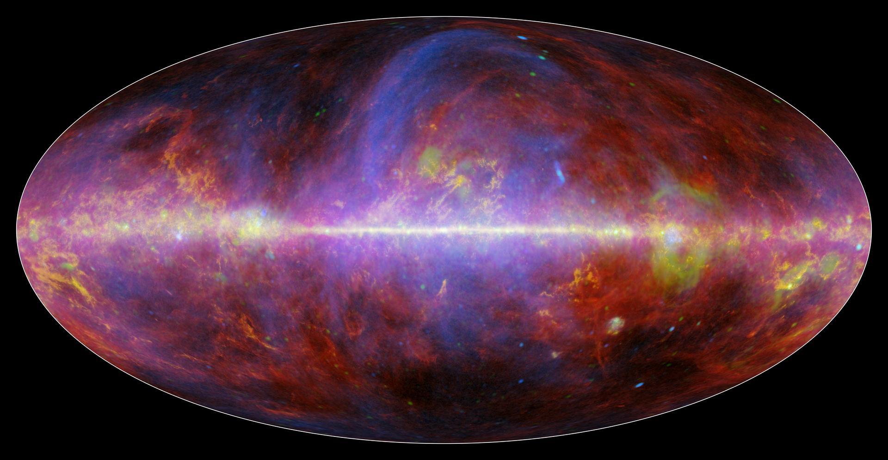

Year 7 Science · Space · Lesson 7 of 10
Aboriginal & Torres Strait Islander Astronomy
Dark constellations, the Boorong catalogue, the sky as an ecological calendar — and Aboriginal astronomical knowledge across the whole unit, gathered here.
Press → to begin.
Spaced retrieval · earlier lessons
Quick quiz
Answer from memory. Discuss with your partner before checking.
Booklet §7 · Overview
What we’re learning today
- Explain what dark constellations are and how they differ from Western constellations
- Describe the Boorong star catalogue and why it is scientifically significant
- Explain how sky knowledge works as an ecological calendar and as navigation
- Recognise Aboriginal and Torres Strait Islander astronomy as science developed over 65,000 years
- Describe how that knowledge and Western astronomy work together today
- I can describe what dark constellations are, using the Emu as an example
- I can give two examples of star positions guiding activity on Country
- I can explain why knowledge carried orally can still be reliable
- I can give an example of Aboriginal knowledge and Western science working together
When you look at the night sky, you see stars. Now look between the stars. What shapes can you make with the dark areas? This is the foundation of dark constellation traditions. Why might the dark patches matter as much as the bright stars?
Entry task · Everyone can do this
We do Dark constellation activity
In your booklet (p. 28), look at the Milky Way photograph. Connect the dark dust lanes to trace the Emu in the Sky. Mark the head (Coalsack Nebula, near the Southern Cross), neck, body, and legs. Then discuss: when the Emu’s head is near the horizon at dusk, what are real emus doing in nature?
The Emu in the Sky is a dark constellation found across many Aboriginal Australian cultures. It is traced by the dark dust lanes — regions of dense gas and dust that absorb starlight — along the Milky Way, rather than by star-to-star connections. The head of the Emu is the Coalsack Nebula (beside the Southern Cross). The Emu’s seasonal position and orientation in the sky tracks when emus are actually laying eggs — validated by zoological records. This is applied astronomical ecology.
Booklet p.28 · §7.1
Concept
Dark constellations and the Boorong catalogue
Dark constellations are figures formed by the dark regions of the Milky Way — silhouettes created by interstellar dust blocking light from stars behind. This is uniquely well-suited to the Southern Hemisphere, where the Milky Way is overhead and bright.
- Examples: Emu (widespread), Possum, Caterpillar, Pregnant Woman, Wedge-tailed Eagle
- The dark areas are real astronomical objects — molecular clouds (like the Coalsack) filled with gas and dust — the birthplaces of new stars
The Boorong star catalogue (Wergaia people, NW Victoria) lists 47 named celestial objects, documented by surveyor William Stanbridge with Elder William Barak’s assistance (1857). It includes the Magellanic Clouds, variable stars, open clusters, and a nova that appeared c.1843.
The Boorong record includes Eta Carinae — a hyperluminous star that brightened dramatically c.1843 (a supernova impostor event). The Boorong appear to have recorded this event, calling it Collowgulloric War. If verified, this is one of the oldest preserved records of a transient astronomical event — a scientific document encoded in living oral tradition.
Booklet p.30 · §7.3
Concept
The sky as ecological calendar
Across Aboriginal Australia, star positions, rising times, and the orientation of celestial features signal when specific ecological events occur. This is a working astronomical calendar integrated into land management:
- Pleiades (Seven Sisters): rising at dusk signals different things in different Country — yam digging, fruit ripening, whale migration, controlled burns
- Orion (Djulpan in Yolngu): position signals stingray season in Arnhem Land
- Emu in the Sky: orientation signals emu egg season across southeastern Australia
- Wurundjeri — Wemburrimin: the Kulin Nation six-season calendar uses rising and setting of specific stars to mark the change of seasons, aligned with ecological signals like animal behaviour and plant cycles
The Wurundjeri-Woiwurrung recognise six seasons rather than four, each marked by ecological indicators and celestial events: Iuk (eel season, autumn), Waring (winter rains), Guling (orchid season), Poorneet (tadpole season), Buath Gurru (grasshopper season), Kangaroo Apple season. Star positions and Milky Way orientation align with each transition — an astronomical framework for ecological knowledge spanning millennia.
Booklet p.30 · §7.3
Work through with the class
I do Worked example — comparing knowledge systems
Compare Western and Aboriginal Australian astronomical traditions. For each: (a) what astronomical objects do they observe? (b) what tools are used? (c) how is knowledge recorded and transmitted? (d) how is knowledge applied?
- 1 Objects observed: Western — stars, planets, galaxies, nebulae, black holes. Aboriginal — stars, planets, dark nebulae, Milky Way dark lanes, Magellanic Clouds, variable stars (and more). Both systems observe the same sky; Aboriginal systems are distinctive in emphasising dark regions.
- 2 Tools and recording: Western — telescopes, spectrographs, computers, written records. Aboriginal — naked-eye observation (highly systematic), oral transmission via song, story, ceremony, and art. Both are systematic; Aboriginal oral systems encode information with precision across hundreds of generations.
- ✓ Application: Western — navigation, timekeeping, satellite deployment, cosmology. Aboriginal — land management, ecological timing, ceremony, navigation, cultural governance. Both systems are practically applied; Aboriginal traditions integrate astronomy with ecology and governance in ways Western astronomy rarely does.
Booklet p.30 · §7.3
Your turn
You do Now you try
A student argues: “Aboriginal astronomy can’t be reliable science because it’s not written down.” Write a 3-point rebuttal using specific evidence from what you have learned.
- 1 Point 1 — Oral transmission is systematic: Aboriginal oral knowledge systems use song, ceremony, kinship structures, and multiple encoding systems (story, art, dance) to transmit precise information with remarkable accuracy. Boorong knowledge preserved a specific star brightening event from 1843 that Western written records also document.
- 2 Point 2 — Ecological predictions are verified: The ecological timing predictions encoded in Aboriginal astronomical calendars (e.g., Emu in Sky = emu egg season) have been independently verified by zoologists and ecologists. Reliable predictions that work in practice are the hallmark of science.
- ✓ Point 3 — Longevity exceeds written records: Aboriginal astronomical traditions are at least 65,000 years old — orders of magnitude older than any written astronomical record (oldest written records: ~5,000 years). The information has been maintained with sufficient precision to remain ecologically valid — a feat of knowledge management no written system has matched in duration.
Booklet p.30 · §7.3
First Nations perspectives
The Seven Sisters across Australia
The Pleiades open star cluster is known to virtually every Aboriginal cultural group in Australia as the Seven Sisters (or a similar grouping of women). The stories differ across Country, but the cluster is universally recognised and its position used as an ecological marker.
On Wurundjeri Country, the Seven Sisters are known as the Nurrumbunguttias — ancestral women who continue to guide people across Country. Their rising and setting marks important seasonal transitions. The Wurundjeri tradition holds that watching the Sisters’ behaviour in the sky informs decisions about movement, ceremony, and food gathering.
Aboriginal songlines are routes across Country encoded in song. Many songlines incorporate astronomical references — the direction a star rises, the time a constellation appears, the position of the Moon at a given camp. Following a songline means reading both the landscape and the sky simultaneously. Songlines as astronomical navigation systems have been compared to GPS — a comparison that undersells their complexity and cultural depth.
Why is it important that Aboriginal astronomy is taught in Year 7 Science as science — not just as culture or history? What does this recognition change?
Booklet p.5 · §1.4
First Nations perspectives
The sky as part of living Country
For Wurundjeri-Woiwurrung people of the Kulin Nation, the sky — including the Sun, Moon, and stars — is not separate from Country. It is an integral part of a living, interconnected system of relationships.

The Milky Way galaxy as seen by the ESA/NASA Planck mission — our galactic home. Credit: ESA/NASA/JPL-Caltech (public domain)
Aboriginal Australians have observed the Sun, Moon, and planets for tens of thousands of years. The rising and setting positions of the Sun mark seasons and guide food gathering, fire management, and ceremony on Country.
Boorong people of north-western Victoria have one of the most detailed recorded Aboriginal sky catalogues. They connected the movements of celestial objects to the ecology of Country — tracking birds, plants, and animals through the positions of stars. This is astronomy in deep relationship with ecological science.
In what way is tracking the Sun’s seasonal position an act of both astronomy AND ecology? How does this compare to what Western science studies separately?
Booklet p.10 · §2.3
First Nations perspectives
Wurundjeri seasonal calendar
Wurundjeri-Woiwurrung people of the Kulin Nation traditionally recognise six to seven seasons on Country, marked not by the European calendar but by ecological signals: flowering plants, animal behaviour, and the rising and setting of specific stars.
The position of the Pleiades and other star clusters in the evening sky signals when to fish in the Yarra, when to harvest yam daisies, and when cool fire management should occur.
Using stellar positions to mark seasons is astronomical observation applied to ecological management. Wurundjeri people used the same physical phenomenon scientists now study — Earth’s tilt causing different stars to be visible at different times — to build a precise, place-based seasonal calendar valid for Country in the Melbourne region.
Why might a star-based seasonal calendar be more ecologically accurate than a calendar based purely on calendar months?
Booklet p.12 · §3.2
First Nations perspectives
Moon knowledge in Aboriginal traditions
Many Aboriginal Australian groups have detailed knowledge of the Moon’s cycle, woven into ceremony, ecology, and governance. For many Wurundjeri women and across Kulin Nation groups, the lunar calendar has been a framework for timing ceremonies, food harvesting, and health practices.
In some traditions, the Moon is a male ancestral being who travels across the sky. His waxing and waning embody cycles of life, rest, and renewal observed over millennia of careful sky-watching.
Using the 29.5-day lunar cycle to organise food gathering, ceremony, and travel is applied astronomical science. The same cycle that drives tides and illuminates Country at night was used to create a sophisticated, precise calendar valid for the southern sky long before European contact.
Why might a lunar calendar (based on Moon phases) be more practical than a solar calendar (based on the Sun’s yearly cycle) for organising monthly activities?
Booklet p.21 · §5.2
First Nations perspectives
Tracking planets across Country
The Boorong people of north-western Victoria observed and named the wandering “stars” — the planets — that moved differently from the fixed star field. The five naked-eye planets (Mercury, Venus, Mars, Jupiter, Saturn) were tracked over decades and centuries, their cycles encoded in oral knowledge.
In Boorong knowledge, the Emu in the Sky (formed by dark nebulae along the Milky Way) moves with the seasons, its position and shape indicating when emus are nesting and when the eggs are ready to collect — an ecological calendar written in the sky.
Unlike Western astronomy which focuses on star-to-star constellations (light), Aboriginal sky knowledge includes dark constellations — shapes formed by the dark dust lanes of the Milky Way against the bright band of stars. The Emu is the best known. When the Emu’s “head” (the Coalsack Nebula, near the Southern Cross) is near the horizon at dusk in autumn, emus are laying eggs. This ecological timing has been verified by zoologists.
Booklet p.43 · §10.3
First Nations perspectives
The Magellanic Clouds in Aboriginal knowledge
The Large and Small Magellanic Clouds are dwarf galaxies visible to the naked eye in the Southern Hemisphere sky. Aboriginal Australians across the continent have observed, named, and incorporated these objects into star lore for thousands of years — long before European astronomers “discovered” them.
In Boorong knowledge (Victorian, Wergaia people), the two Magellanic Clouds represent Yugarilya — the two Bram-bram-bult (sons of Bunjil, the creator) who fly through the sky as wedge-tailed eagles. Their positions tracked seasons.
The Boorong star catalogue, documented in 1857 with Elder William Barak’s assistance, is one of the most detailed records of Aboriginal astronomical knowledge. It matches 47 celestial objects to Boorong names. Researchers have since confirmed Boorong knowledge of the Magellanic Clouds predates their European naming by millennia. This is a living knowledge system — ongoing, not historical.
Booklet p.36 · §8.5
First Nations perspectives
Sky beings, creation, and the search for origins
Across Aboriginal Australian cultures, the sky is understood as a place inhabited by ancestral beings — the creators of Country, law, and life. These are not separate from science; they are a different framing of fundamental questions about origins, existence, and our place in the cosmos.
In Wurundjeri tradition, Bunjil the Wedge-tailed Eagle is a creator being who, after establishing Country, laws, and people, flew into the sky and became the star Altair. His sons, the Two Bram-bram-bult (the Magellanic Clouds in Boorong knowledge), continue to observe from the sky. The universe is not empty or silent — it is inhabited, relational, and meaningful.
Western astrobiology asks: “Is there microbial life in Europa’s ocean?” Aboriginal cosmology has always held that the universe is not empty — that the sky is inhabited by ancestors who shaped Country and continue to be present in the landscape. These are not contradictory answers to the same question — they are different kinds of questions about being, origin, and relationship. Both are valid frameworks. Our science can search for biology; it cannot address meaning.
First Nations perspectives
Celestial navigation and the predictable sky
The fact that stars, Moon, and planets follow predictable paths is a direct consequence of gravity governing orbital motion. This regularity allowed Aboriginal Australians to use the sky for precise navigation, timing, and seasonal calendars.
The Wurundjeri and other Kulin Nation peoples navigate across Country using star positions, noting which stars rise and set where on the horizon across different seasons. The Southern Cross (Crux) — used to find true south — and the Two Pointers (Alpha and Beta Centauri) have been navigation aids for tens of thousands of years in the southern sky.
When the Boorong people recorded the positions of stars across seasons, they were implicitly relying on the same gravitational physics Newton later formalised in equations. Planetary orbits, stellar rise-times, the Moon’s cycle — all are consequences of gravity. Aboriginal sky knowledge systems are therefore applied gravitational astronomy, built through systematic observation over generations.
Booklet p.24 · §6.2
First Nations perspectives
Wajarri Country and the Square Kilometre Array
The Square Kilometre Array (SKA), the world’s largest radio telescope when complete, is being built in the Murchison region of Western Australia — on Wajarri Yamatji Country. This site was chosen for its exceptionally radio-quiet environment (no mobile networks, minimal human-made radio interference).
The Wajarri Yamatji people have a formal Indigenous Land Use Agreement with the Australian government. Their Country has some of the darkest, quietest skies on Earth — used for millennia for sky knowledge and now hosting cutting-edge global science.
The Wajarri people call the Milky Way Karlaya’s path. Their sky knowledge — maintained for tens of thousands of years on this Country — and the SKA share the same remarkable sky. The project requires genuine partnership: the Wajarri have veto rights over activities on their Country, and the agreement includes community benefits (employment, training, infrastructure). This is a model of how Western science can partner respectfully with Traditional Custodians.
Booklet p.27 · §6.5
First Nations perspectives
Satellite technology on Country
Indigenous rangers across Australia increasingly use Earth observation satellite data to manage Country. On Wurundjeri and Kulin Nation Country, satellite data informs decisions about:
- Monitoring vegetation health and seasonal change
- Identifying water sources and their seasonal variation
- Tracking fire risk and planning cultural burns
- Monitoring invasive species spread
This combines traditional ecological knowledge of Country — developed over tens of thousands of years — with satellite data to make better land management decisions than either alone could achieve.
The CSIRO’s Digital Earth Australia programme makes satellite time-series data freely available to Indigenous ranger groups. Ranger programs in Arnhem Land, the Kimberley, and Cape York Peninsula use multispectral imagery to track seasonal change. Traditional Owners often say the satellite data confirms what their ancestors already knew about Country — but now they can document it, share it, and advocate for its protection with government agencies.
Booklet p.46 · §10.6
First Nations perspectives
Two-way astronomy: Wajarri and the MWA
The Murchison Widefield Array (MWA) — a radio telescope precursor to the SKA — sits on Wajarri Yamatji Country in Western Australia. It is one of the most sensitive radio telescopes on Earth, used to map hydrogen across the Milky Way and search for signatures of the early universe.
The Wajarri Yamatji have maintained detailed sky knowledge of this landscape for tens of thousands of years, observing seasonal changes in the Milky Way’s position and the movements of bright stars above their Country. The MWA is operated under partnership with the Wajarri — not despite their traditions but in concert with them.
Radio astronomy detects structures in the Milky Way that are invisible to optical telescopes — vast clouds of hydrogen gas, the remnants of supernova explosions, and radio pulses from pulsars. Wajarri sky knowledge includes the Milky Way’s seasonal changes and the dark constellations visible to the naked eye. Both systems observe the same sky from the same Country, each revealing different layers of the same cosmos.
Year 8 Extension
Dark constellations — the astrophysics
The dark regions Aboriginal Australians trace as “dark constellations” are real, scientifically significant objects — molecular clouds (dense regions of gas and dust):
- The Coalsack Nebula (Emu’s head) is about 600 light-years away; density ~1,000 hydrogen molecules per cm³ (interstellar space averages ~1 per cm³)
- Molecular clouds are the birthplaces of stars — gravity causes dense regions to collapse into protostars
- They are cold (~10–30 K) and opaque to visible light; transparent to radio waves and infrared (hence why radio and IR telescopes image them)
- The Coalsack is a Bok globule — a type of dense, dark nebula associated with very recent or ongoing low-mass star formation
The Coalsack was recognised by Aboriginal peoples as the Emu’s head for tens of thousands of years. Modern astrophysics reveals it is a stellar nursery — new solar systems are forming inside it right now. The two knowledge systems describe the same object at different scales and timescales, each complementing the other.
Booklet p.30 · Year 8 extension
Year 8 Extension
How oral knowledge systems preserve scientific data
Linguistic research and cultural studies confirm that oral knowledge systems can maintain factual precision across extraordinary timescales. Several examples from Aboriginal Australia:
- Sea level changes: Aboriginal stories about country now underwater (Bass Strait, Gulf of Carpentaria) correspond to sea levels from 10,000–12,000 years ago — the oldest geographically accurate stories in the world (Nunn & Reid, 2016)
- Volcanic eruptions: Gunditjmara stories describe lava flows from Mount Eccles in Victoria; geological dating confirms eruptions 6,000–8,000 years ago
- Astronomical events: Boorong records of Eta Carinae’s 1843 brightening are consistent with European records from the same era
Multi-layered encoding: the same information is embedded in song, story, ceremony, art, and kinship obligations. Each layer serves as a check on the others. Error-correction is social — discrepancies between versions are noticed and adjudicated. Knowledge is held communally across generations, not in a single fallible document. This makes Aboriginal oral tradition arguably more robust than written records that can be lost or destroyed.
Lesson recap
What we covered
- Dark constellations: shaped by interstellar dust lanes in the Milky Way; a uniquely southern-hemisphere astronomical tradition. The Emu in the Sky is the most well-known
- Boorong catalogue: 47 named celestial objects including the Magellanic Clouds and a possible record of the 1843 Eta Carinae brightening
- Aboriginal sky knowledge functions as an ecological calendar — star positions indicate when to harvest, burn, move, and celebrate
- On Wurundjeri Country, the Six Seasons calendar integrates astronomical and ecological knowledge across millennia
- Aboriginal astronomy is genuine science — systematic, predictively reliable, and preserved with precision across at least 65,000 years
You are a scientist designing a citizen science project to map Australia’s dark constellations. How would you approach this in a way that respects Aboriginal intellectual property, involves community members meaningfully, and produces genuine scientific knowledge? Who would you partner with?